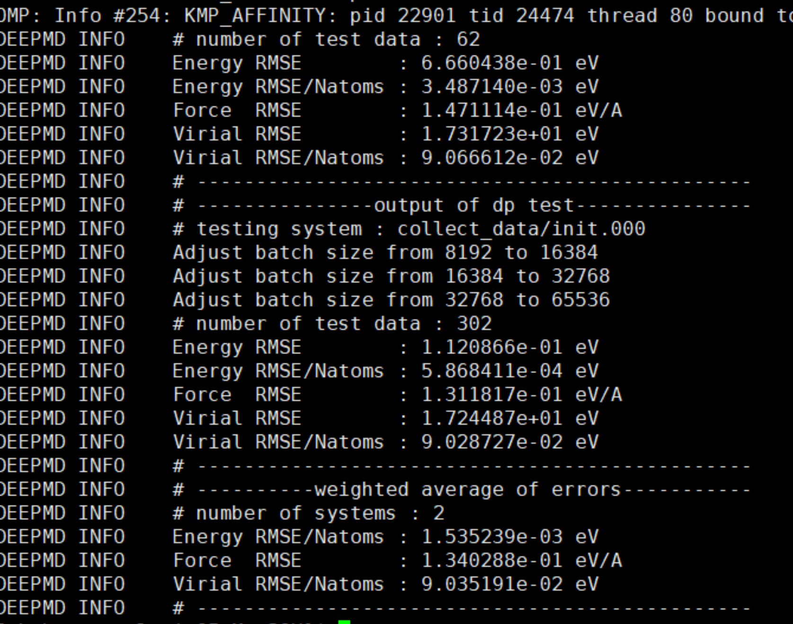

ABACUS+DPGEN 使用教程
作者：刘建川，邮箱：liujianchuan2013@163.com
审核：陈默涵，邮箱：mohanchen@pku.edu.cn
最后更新时间：2023/06/15
在Bohrium Notebook上快速学习：
一、介绍
本教程旨在介绍结合 ABACUS（中文名原子算筹，这里基于 ABACUS 3.2.0 版本）和 DPGEN 软件结合生成机器学习 DP 势，这里 ABACUS 扮演了提供第一性原理训练数据的作用。本教程以碳化硅（SiC）材料为案例，并且教大家使用 DPGEN autotest 功能，计算 SiC 的 Equation of State (EOS)和弹性常数等性质。先介绍主要软件和计算平台：
DPGEN软件：是一个结合第一性原理软件来自动产生训练数据标签的软件，如果不熟悉 DPGEN 的读者，这里可以推荐大家先阅读 DPGEN 的相关原理文档和说明，熟悉这部分的读者可以跳过：
- https://docs.deepmodeling.com/projects/dpgen/en/latest/
- https://bohrium-doc.dp.tech/docs/software/DP-GEN
- https://bohrium-doc.dp.tech/docs/software/DP-GEN_init
- https://bohrium-doc.dp.tech/docs/software/DP-GEN_autotest
- https://www.sciencedirect.com/science/article/pii/S001046552030045X?via%3Dihub
计算平台：由于本案例通过 Bohrium 平台教学，所以所用到的 machine.json 文件仅限于 Bohrium 平台使用，如需在其他平台上使用，可参考下面网址，修改 machine.json 文件：
二、准备
1. 案例下载地址
本教程用到的所有输入文件，均可点击这里下载。
(https://gitee.com/mcresearch/abacus-user-guide/tree/master/examples/abacus-dpgen)
此外，在 Linux 下可以采用的下载命令是：
git clone https://gitee.com/mcresearch/abacus-user-guide.git
之后进入 /abacus-user-guide/examples/md 目录
或者采用 Github 仓库地址：
https://github.com/MCresearch/abacus-user-guide/tree/master/examples/md
下载完之后，应该可以看到三个文件夹：
init，run，以及 auto-test
init文件夹：包含用于 dpgen init_bulk 步骤所需的输入文件，用户可参考其设置自己的体系参数。run文件夹：包含用于 dpgen run 步骤所需的输入文件，用户可参考其设置自己的体系参数。auto-test文件夹：包含用于计算弹性常数等性质的输入文件，用户可参考其设置自己的体系参数。
2. 安装相关软件
这里默认读者已经安装好了 ABACUS 软件，本算例中 ABACUS 计算采用的是数值原子轨道的 LCAO（Linear Combination of Atomic Orbitals）方法，因为一般来说 LCAO 会比平面波效率更高，此外读者也可以把密度泛函理论计算部分改成平面波基矢量（后续会讲到）。
开始之前，请务必安装/更新 dpgen 和 dpdata（用来转换数据）到最新版本：
1. 安装/更新 dpdata
pip install --user git+``https://gitee.com/deepmodeling/dpdata.git@devel
2. 安装/更新 dpgen
pip install --user git+``https://gitee.com/deepmodeling/dpgen.git@devel
三、结合 DPGEN 生成 DP 数据的流程
DPGEN 使用流程如下，接下来我们将一一展开介绍：
1. 准备赝势和数值原子轨道文件
本例子所需文件有：
- 模守恒赝势文件，格式为*.upf，也可以使用其他 ABACUS 支持的赝势格式，注意 ABACUS 目前不支持 PAW 方法或者超软赝势。
- 数值原子轨道文件，格式为*.orb，注意这里的数值原子轨道文件要和赝势文件匹配，也就是数值原子轨道是由指定赝势产生的，关于如何生成数值原子轨道，我们会提供中文教程。
注：在 ABACUS 官网上可以下载到赝势和数值原子轨道文件：
http://abacus.ustc.edu.cn/pseudo/list.htm
本例采用的赝势和轨道是：
- C 的 PBE 模守恒 ONCV 模守恒赝势：C_ONCV_PBE-1.0.upf
- Si 的 PBE 模守恒 ONCV 模守恒赝势：Si_ONCV_PBE-1.0.upf
- C 的 PBE 模守恒 ONCV 赝势对应的数值原子轨道：C_gga_9au_100Ry_3s3p2d.orb
- Si 的 PBE 模守恒 ONCV 赝势对应的数值原子轨道：Si_gga_9au_100Ry_3s3p2d.orb
注：如果是使用平面波基矢量来做密度泛函理论计算，则不需要提供数值原子轨道文件，结合 DPGEN 使用的流程是一致的（仅需要删除调用轨道文件的输入参数即可）。如果采用其他 ABACUS 支持的赝势文件，可自行生成轨道文件（请参考本教程系列的其它相关中文教程）.
注：这里 C_gga_9au_100Ry_3s3p2d.orb 的意思是 C 元素、采用 GGA 泛函、轨道截断半径是 9 a.u.（轨道截断半径越大，则 ABACUS 所需求解 Kohn-Sham 方程的时间会越长，而且这个时间对于轨道半径极其敏感，推荐可以测试不同轨道半径，选取合适的、截断半径小的轨道可以加速计算），100 Ry 是推荐的平面波截断值（哪怕用了数值原子轨道，程序里还是会用平面波来做某些物理量的计算，比如模守恒赝势的局域赝势部分），3s3p2d 表示 3 个 s 径向轨道、3 个 p 轨道、2 个 d 轨道。
2. 准备原子体系的结构文件
本步骤所需的描述原子结构的文件有：
- *.cif
可以从多个渠道下载所需体系的结构文件，本案例主要从 materials project 网站下载 cif 文件，使用的 SiC 对应多个原子构型，主要有 3C、2H、4H、6H 四个构型，采用哪些构型取决于用户所研究的体系和性质，一般可选取所关心的物质温度和压强区间内可能出现的结构。本案例主要采用3C 和 2H构型来演示。
- 3C-SiC：https://materialsproject.org/materials/mp-8062?formula=SiC
- 2H-SiC: https://materialsproject.org/materials/mp-7140?_skip=15&formula=SiC
- 4H-SiC: https://materialsproject.org/materials/mp-11714?formula=SiC
- 6H-SiC: https://materialsproject.org/materials/mp-7631?formula=SiC
得到了 cif 之后，可以使用下列方法把 cif 转换成 STRU 文件：
1. 安装 ASE-ABACUS 接口：
git clone https://gitlab.com/1041176461/ase-abacus.git
cd ase-abacus
python3 setup.py install
2. 设置环境变量（可选）
ABACUS 支持两种基组：平面波（PW）和数值原子轨道（LCAO）。赝势和轨道文件的存放路径可以通过环境变量设置，分别为：ABACUS_PP_PATH 和 ABACUS_ORBITAL_PATH,设置方法如下：
PP=${HOME}/pseudopotentials
ORB=${HOME}/orbitals
export ABACUS_PP_PATH=${PP}
export ABACUS_ORBITAL_PATH=${ORB}
PW 计算只需要设置 ABACUS_PP_PATH 。 LCAO 需要两个都设置：ABACUS_PP_PATH and ABACUS_ORBITAL_PATH 。
3. CIF 转 STRU
from ase.io import read, write
from pathlib import Path
cs_dir = './'
cs_vasp = Path(cs_dir, 'SiC.cif') # 修改为自己的cif文件名
cs_atoms = read(cs_vasp, format='cif')
cs_stru = Path(cs_dir, 'STRU')
pp = {'Si':'Si_ONCV_PBE-1.0.upf','C':'C_ONCV_PBE-1.0.upf'} # 修改为所对应的赝势文件名
basis = {'Si':'Si_gga_9au_100Ry_3s3p2d.orb','C':'C_gga_9au_100Ry_3s3p2d.orb'} # 修改为所对应的轨道文件名
write(cs_stru, cs_atoms, format='abacus', pp=pp, basis=basis)
运行上述 python 脚本，把 cif 转成 ABACUS 所需的 STRU 文件。
3. 产生初始训练数据
本步骤所需文件有：
- 原子结构文件：
STRU - 数值原子轨道文件：
*.orb - 赝势文件：
*.upf - 布里渊区 k 点采样：
KPT - 提交任务的文件：
machine.json - DPGEN 的输入参数文件：
param.json
为每一个构型新建一个名为 init 的文件夹。进入该文件夹后，为每个构型都新建一个单独的文件夹，之后单独运行 dpgen init_bulk 命令，用于产生接下来的 dpgen run 步骤的初始数据集。本案例所提供的初始原子构型为 3C 和 2H 结构，并把赝势文件、轨道文件、STRU 文件放入对应的文件夹里。按照下面链接的案例准备适合自己机器的 machine.json 文件，并分别放入 3C 和 2H 文件夹。
本教程所用到的文件可以从 Gitee 下载，修改为符合自己的配置即可。
接下来准备 param.jsion 文件，本步骤最关键的设置也是 param.json 文件设置，案例如下：
{
"init_fp_style": "ABACUS",
"stages": [1,2,3,4],
"cell_type": "diamond",
"super_cell": [1, 1, 1],
"elements": ["Si","C"],
"from_poscar": true,
"from_poscar_path": "./STRU",
"potcars": ["Si_ONCV_PBE-1.0.upf","C_ONCV_PBE-1.0.upf"],
"orb_files": ["Si_gga_9au_100Ry_3s3p2d.orb","C_gga_9au_100Ry_3s3p2d.orb"],
"relax_incar": "./INPUT_rlx",
"md_incar" : "./INPUT_md",
"relax_kpt": "./KPT",
"md_kpt": "./KPT",
"md_nstep": 10,
"scale": [0.99,1.00,1.01],
"skip_relax": false,
"pert_numb": 10,
"pert_box": 0.03,
"pert_atom": 0.01,
"deepgen_templ": "../generator/template/",
"coll_ndata": 5000,
"_comment": "that's all"
}
init_fp_style 关键字需设置为 ABACUS，如果 from_poscar 为 true，则会读取 from_poscar_path 指定的 STRU 文件，且 cell_type 关键字失效。super_cell 用于括胞，推荐直接使用括胞之后的 STRU 文件，则 super_cell 设置为[1, 1, 1]。括胞一般根据需求而定，使得三个方向的 cell 长度约为 6 埃以上（经验性的）。其中还用到了 *.``upf 和 *.``orb 文件，修改为自己所计算的体系即可。
init_bulk 的基本操作流程分为以下 4 个顺序步骤：
- 生成初始(平衡)结构：输出文件存储在
00.place_ele。 - 产生 MD 起始构象：放缩扰动
00.place_ele中的结构，输出文件存储在01.scale_pert。 - 执行 AIMD：取
01.scale_pert起始构象调用 vasp 执行少步数 AIMD，输出文件存储在02.md。 - 整理初始数据：调用
dpdata提取02.md中 AIMD 各 snapshots 的数据作为初始数据，输出文件存储在02.md。
param.json 中将使用 stages 关键词的取值 1~4 控制以上 4 步的执行，操作中，各步骤(2, 3, 4 在所需前一步输出文件存在的前提下)可独立执行。
其他具体参数含义可参考 dpgen 官网：
另外，还需准备两个 ABACUS 输入文件 INPUT_rlx 和 INPUT_md。
INPUT_rlx主要用于优化所下载的结构，如下：
INPUT_PARAMETERS
#Parameters (1.General)
suffix ABACUS
calculation cell-relax
#Parameters (2.Iteration)
ecutwfc 100
scf_thr 1e-6
scf_nmax 100
#Parameters (3.Basis)
basis_type lcao
#Parameters (4.Smearing)
smearing_method gauss
smearing_sigma 0.002
#Parameters (5.Mixing)
mixing_type pulay
mixing_beta 0.3
cal_stress 1
INPUT_md主要用于产生一定数量的 AIMD 轨迹，用于 DPGEN 迭代的输出数据，如下：
INPUT_PARAMETERS
#Parameters (1.General)
suffix ABACUS
calculation md
#Parameters (2.Iteration)
ecutwfc 100
scf_thr 1e-6
scf_nmax 100
#Parameters (3.Basis)
basis_type lcao
#Parameters (4.Smearing)
smearing_method gauss
smearing_sigma 0.002
#Parameters (5.Mixing)
mixing_type pulay
mixing_beta 0.3
cal_stress 1
#MD
chg_extrap second-order
md_type 2
md_tfirst 300
md_tlast 300
md_nstep 10
md_tfirst 10
md_tfreq 0.5
注：ABACUS 的 MD 关键字在此 3.2.0新版本有所更改，如果是使用的最新版本，请严格参考手册设置关键字，如md_type在新版本里改为了nvt、npt等形式，而不再用数字（如：2）等：
- 此外，还需准备一个存放布里渊区 k 点的文件，名为
KPT：
K_POINTS
0
Gamma
4 4 4 0 0 0
也可在 INPUT 文件里直接指定 kspacing 参数（注意该参数可选 1 维或者 3 维，如果是表面系统可选 3 维因为真空方向不需要太多 k 点）。
用户可自行根据所研究体系，设置、更改上述参数。
所有以上输入文件准备完毕后，采用如下命令分别对 3C 和 2H 结构运行 dpgen：
nohup dpgen init_bulk param.json machine.json 1>log 2>err&
上述命令采用后台提交 dpgen，等所有计算完成之后，dpgen 会自动收集训练 DP 势所需的数据，且转换为 DeePMD-kit 的数据格式，保存在 ./STRU.01x01x01/02.md/sys-0036-0036/deepmd 目录里。
4. 进行数据采样的迭代
run主流程包含一系列迭代，各迭代会根据所选系综在给定的温度、压力或体积等条件下进行 DPMD 采样与筛选，实现同步学习，所有迭代希望能够有效覆盖训练可靠模型所需的势能面上样本空间。每个迭代依次：基于init 准备的初始训练数据与之前迭代积累的训练数据|训练多个新的模型->使用当前的模型进行DPMD采样，根据模型间预测偏差(model-deviation)|挑选候选 snapshot 构象->将本轮候选 snapshot 构象进行第一性原理标定并加入数据集|扩展数据集 。
以上每个迭代中包含的 3 个步骤分别被命名为 00.train，01.model_devi，02.fp，细节如下：
- 00.train: 使用 init 准备的初始训练数据与之前迭代积累的训练数据，调用 DeepMD-kit 训练多个 (默认 4 个) 模型。模型间的唯一区别来自于初始化神经网络时使用不同的随机数种子。
- 01.model_devi: 指代 model-deviation。 调用 LAMMPS 使用 00.train 的 1 个模型进行 MD 模拟。对于任一 MD 中 snapshot，模型间预测偏差越大意味着当前模型系综对该 snapshot 构象的精度越低，通过引入模型偏差作为误差判据并设定上下限, 挑选出有希望有效改进模型对 PES 整体预测精度的 snapshot 构象，作为准备加入训练数据集的候选构象。
- 02.fp: 调用 ABACUS 对 01.model_devi 选取的候选构象进行第一性原理定标(单点计算)，并调用 dpdata 收集整理所得数据加入到训练数据集中。
run 执行后，相关文件即存储在....../iter.*(迭代序号)/步骤文件夹内。以上每个迭代中的每个步骤在实现中被分解为 3 个阶段。以 00.train 为例，3 阶段分别对应: 0：make_train ，为训练任务准备脚本；1： run_train，依据机器配置上传文件并执行训练任务；2：post_train，收集整理分析训练任务的结果。01.model_devi 与 02.fp 的实现步骤与之类似，分别使用 3，4，5 及 6，7，8 来标记其阶段。
用输出文件record.dpgen来记录进程已经执行过及当前正在执行的阶段。如进程中断后需要续算，DP-GEN将根据此文件的记录来自动恢复run主进程。用户也可根据需求手动修改record.dpgen中的记录，来控制接下来将执行哪一阶段的任务：例如，删除最后一阶段(可能未执行完成即中断)的记录，并从前一个已完成阶段后恢复任务。可以通过查看record.dpgen文件监控当前任务的执行阶段。
本步骤所需文件有：
STRU*.orb*.upfmachine.json（可以直接用 dpgen init bulk 里的）param.jsondpgen init bulk产生的初始训练数据
主要步骤如下：
1. 新建一个文件夹，命名为：run，并进入此目录里
2. 在 run 文件夹里面新建 init_conf 和 init_data 文件夹，用于存放 dpgen init bulk 产生的构型和初始训练数据
3. 为了区分不同构型和初始训练数据，在 init_conf 和 init_data 文件夹里新建名为 3C 和 2H 的两个文件夹
4. 拷贝 dpgen init bulk 产生的构型和初始训练数据至 init_conf 和 init_data 文件夹里，如：
cp -rf yourPath/init/3C/STRU.01x01x01/02.md/sys-0032-0032 yourPath/run/init_conf/3C
cp -rf yourPath/init/2H/STRU.01x01x01/02.md/sys-0036-0036 yourPath/run/init_conf/2H
cp -rf yourPath/init/3C/STRU.01x01x01/02.md/sys-0032-0032/deepmd/* yourPath/run/init_data/3C
cp -rf yourPath/init/2H/STRU.01x01x01/02.md/sys-0036-0036/deepmd/* yourPath/run/init_data/2H
5. 拷贝 machine.json、*.orb 和 *.upf 文件到 run 文件夹
6. 新建一个 param.json 文件，如下案例：
{
"type_map": ["Si","C"],
"mass_map": [28.085,12.011],
"init_data_prefix": "./init_data",
"init_data_sys": [
"3C",
"2H"
],
"sys_format":"abacus/stru",
"sys_configs_prefix": "./init_conf",
"sys_configs": [
["3C/sys-0032-0032/scale-1.000/00****/STRU"],
["2H/sys-0036-0036/scale-1.000/00****/STRU"]
],
"_comment": " that's all ",
"numb_models": 4,
"default_training_param": {
"model": {
"type_map": ["Si","C"],
"descriptor": {
"type": "se_e2_a",
"sel": "auto",
"rcut_smth": 0.5,
"rcut": 6.0,
"neuron": [25, 50, 100],
"resnet_dt": true,
"axis_neuron": 12,
"seed": 1
},
"fitting_net": {
"neuron": [240, 240, 240],
"resnet_dt": false,
"seed": 1
}
},
"learning_rate": {
"type": "exp",
"start_lr": 0.001,
"stop_lr": 3.5e-8,
"decay_steps": 2000
},
"loss": {
"start_pref_e": 0.02,
"limit_pref_e": 2,
"start_pref_f": 1000,
"limit_pref_f": 1,
"start_pref_v": 0.0,
"limit_pref_v": 0.0
},
"training": {
"stop_batch": 400000,
"disp_file": "lcurve.out",
"disp_freq": 100,
"numb_test": 10,
"save_freq": 1000,
"save_ckpt": "model.ckpt",
"disp_training": true,
"time_training": true,
"profiling": false,
"profiling_file": "timeline.json",
"_comment": "that's all"
}
},
"model_devi_dt": 0.002,
"model_devi_skip": 1000,
"model_devi_f_trust_lo": 0.05,
"model_devi_f_trust_hi": 0.10,
"model_devi_clean_traj": true,
"model_devi_merge_traj": true,
"model_devi_jobs": [
{"sys_idx": [0,1], "temps":[50, 250, 450, 650], "press": [0, 100, 1000, 5000, 10000, 20000, 50000], "trj_freq": 10, "nsteps": 3000, "ensemble": "npt-tri", "_idx": "01"},
{"sys_idx": [0,1], "temps":[50, 250, 450, 650], "press": [0, 100, 1000, 5000, 10000, 20000, 50000], "trj_freq": 10, "nsteps": 3000, "ensemble": "npt-tri", "_idx": "02"}
],
"fp_style": "abacus",
"shuffle_poscar": false,
"fp_task_max": 100,
"fp_task_min": 5,
"fp_accurate_threshold": 0.999,
"fp_accurate_soft_threshold": 0.998,
"fp_pp_path": "./",
"fp_pp_files": ["Si_ONCV_PBE-1.0.upf","C_ONCV_PBE-1.0.upf"],
"fp_orb_files": ["Si_gga_9au_100Ry_3s3p2d.orb","C_gga_9au_100Ry_3s3p2d.orb"],
"user_fp_params":{
"ntype": 2,
"symmetry": 0,
"basis_type": "lcao",
"ecutwfc": 100,
"scf_thr": 1e-6,
"scf_nmax": 100,
"smearing_method": "gauss",
"smearing_sigma": 0.002,
"mixing_type": "pulay",
"mixing_beta": 0.3,
"cal_force": 1,
"cal_stress": 1,
"kspacing": 0.08
}
}
type_map: 用列表方式设置了体系元素，注意顺序要和 STRU 结构文件里一致mass_map: 记录了对应的原子质量，和 type_map 对应init_data_prefix：指定初始训练集的位置所在目录，如：./init_datainit_data_sys：定位到初始训练集的具体目录，用列表调用多个，即：./init_data/2Hsys_format：指定为 ABACUS 计算的结构，即：abacus/strusys_configs_prefix：指定探索步所需调用的结构目录，如：./init_confsys_configs：指定具体的某个构型的目录，用列表调用多个，即：./init_conf/3C/sys-0032-0032/scale-1.000/00****/STRU。其中 00为通配符，dpgen 会遍历 00所有文件夹的 STRU 文件model_devi_f_trust_lo和model_devi_f_trust_hi：可由“init 数据” 中力绝对值的平均值，然后取该值的 20%-50%，设置成 trust level 的上下限。可通过以下 python 脚本计算：（注意指定初始数据位置）
import dpdata
import numpy as np
do06=dpdata.Labeledsystem("./"，"deepmd/raw")
forces = np.absolute(d006["forces"])
af = np.average(forces)
f_trust_lo = af*0.2
f_trust_hi = af*0.5
print(f_trust_lo,f_trust_hi)
如果体系温度升高后力的幅度变大，trust level 也要增大设置
model_devi_jobs里面每一行代表一轮，每轮设置参数为 LAMMPS 进行 MD 模拟的参数fp_style指定，使用 ABACUS 进行 SCF 计算user_fp_params里面记录 ABACUS 做 SCF 所需的参数- 其他参数含义见：https://docs.deepmodeling.com/projects/dpgen/en/latest/run/index.html
1. 准备好所有输入文件之后，运行命令：
nohup dpgen run param.json machine.json 1>log 2>err&
为后台提交，等待迭代计算完成即可。
2. 实时监测每轮的 accurate 数据，在 dpgen.log 文件里有记录
1）模型精度是判断每个迭代中的训练是否收敛的重要指标。
2）掌握训练策略有利于快速迭代和收敛。
3）经验性：一般体系在 5-8 轮迭代内会上升到 80% 以上，若没有提升，如下方法排查：
a. 检查是否是探索步已经崩溃了，收集了许多不合理的结构
b. 检查train的loss是否是收敛
c.
dp test查看fp数据是否偏差很大，或者有不合理的情况d. 检查是否是温度设置过高而导致的结构变形严重
e. 及时调整trust level，体系温度升高后力的幅度变大，trust level也要增大设置
3. 一些经验
- 探索步已经崩溃的解决方案
原因：DPMD 跑崩的情况一般发生在 训练温度 高于 熔点，而这个温区的结构是从“有序”到“无序态”的 ，其构型易变，采样空间增大，导致训练难度增加。DPMD 跑崩表明当前势函数对这类构型描述较差，大概率是因为前期数据集中这类构型采集的较少；特别是无序态结构的原子距离变小。
策略：在熔点附近的 参数设置需要平滑缓慢对待，增加“MD 轨迹保存频率”；缩短“MD 模拟步数”或降低“MD 步长”，增加迭代次数，其 DP 训练势函数稳定后再延长 MD 模拟步数。
- ABACUS 收敛性测试
对每种体系一定要先做各个参数的收敛性测试，特别是：K 点、能量截断，也可测试 scf_thr 降低计算量。另外，对于赝势文件也一定要做性质测试，看是否能够正确描述目标体系的性质
- 每隔几轮做一次 dp test
初始数据得到后，第一轮生成了 dp 势之后，一定要检查 trian 步骤收敛情况和做 dp test。dp test 用如下命令：
dp test -m frozen_model.pb -s ./collect_data -n 2000 -d out.out
frozen_model.pb 为生成的 4 个模型中的某一个，2000 为 collect_data 里面单个结构的总数。out.out 会生成 out.e.out out.f.out out.f.out 三个偏差数据文件，用于作图判断模型优劣屏幕会输出每个构型力、能量等误差平均值，也可用*.out 文件做出 DP 和 DFT 偏差图，如：


经验性的，力的精度在 1e-2 量级，能量精度在 5e-3 量级，说明模型比较好。
四、计算材料 EOS 和弹性常数的流程
本例子里提供了一个 auto-test 文件夹，进入之后可以结合 DPGEN 的 auto-test 命令计算材料 EOS、弹性常数的流程
auto-test 的详细流程，可以从如下网页教程查阅：
https://bohrium-doc.dp.tech/docs/software/DP-GEN_autotest
这里贴上如何使用 ABACUS 来计算材料 EOS、弹性常数的相关输入文件
relaxation.json：
{
"structures": ["conf"],
"interaction": {
"type": "abacus",
"incar": "./INPUT",
"potcar_prefix":"./",
"potcars": {"Si": "Si_ONCV_PBE-1.0.upf","C": "C_ONCV_PBE-1.0.upf"},
"orb_files": {"Si":"Si_gga_9au_100Ry_3s3p2d.orb","C":"C_gga_9au_100Ry_3s3p2d.orb"}
},
"relaxation": {
"cal_type": "relaxation",
"cal_setting":{
"input_prop": "./INPUT"
}
}
}
property.json：
{
"structures": ["conf"],
"interaction": {
"type": "abacus",
"incar": "./INPUT",
"potcar_prefix":"./",
"potcars": {"Si": "Si_ONCV_PBE-1.0.upf","C": "C_ONCV_PBE-1.0.upf"},
"orb_files": {"Si":"Si_gga_9au_100Ry_3s3p2d.orb","C":"C_gga_9au_100Ry_3s3p2d.orb"}
},
"properties": [
{
"type": "eos",
"vol_start": 0.9,
"vol_end": 1.1,
"vol_step": 0.02
},
{
"type": "elastic",
"norm_deform": 1e-2,
"shear_deform": 1e-2
}
]
}
INPUT：
INPUT_PARAMETERS
calculation cell-relax
symmetry 0
basis_type lcao
ecutwfc 100.0
scf_thr 1.0e-06
scf_nmax 100
smearing_method gauss
smearing_sigma 0.002
mixing_type pulay
mixing_beta 0.3
cal_force 1
cal_stress 1
kspacing 0.10
在当前目录建立一个 conf 文件夹，把 STRU 文件放进去，依次运行下面命令：
dpgen autotest make relaxation.json
nohup dpgen autotest run relaxation.json machine.json &
dpgen autotest post relaxation.json
dpgen autotest make property.json
nohup dpgen autotest run property.json machine.json &
dpgen autotest post property.json
计算完成之后，会在 conf/elastic_00/result.out 文件里记录弹性常数、模量等信息，conf/eos_00/result.out 里记录 EOS 等数据。
以上即为采用 ABACUS 3.2.0 和 DPGEN 软件结合的介绍，若有任何问题，欢迎给我们反馈。